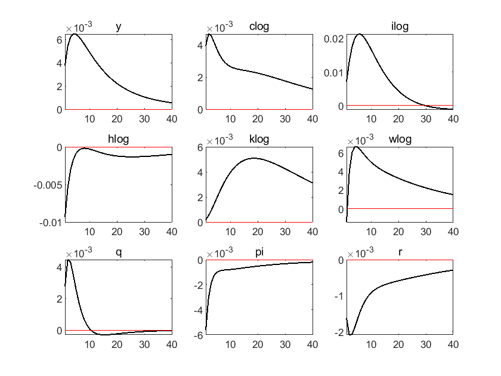
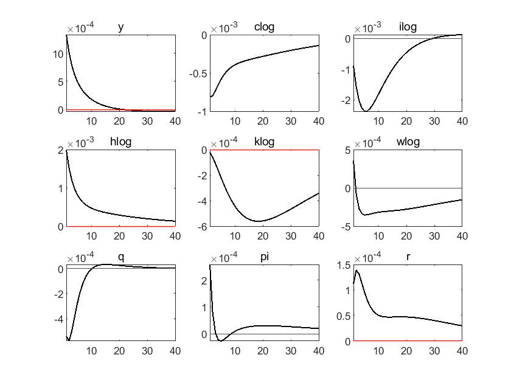
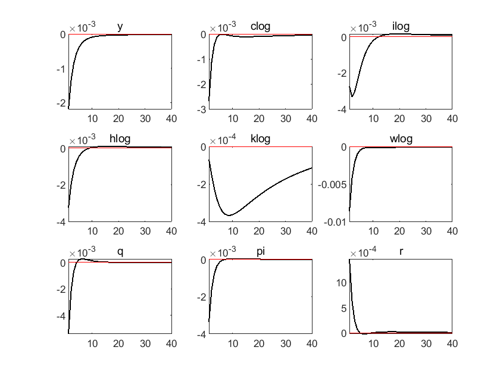
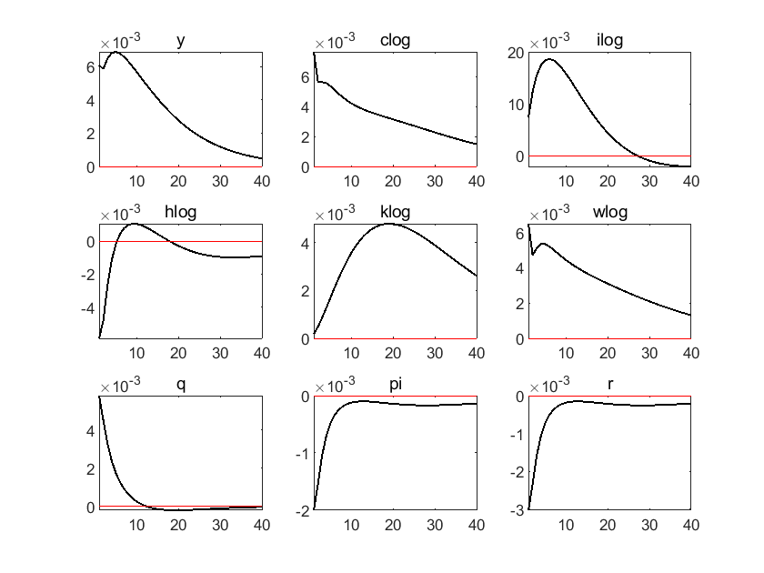
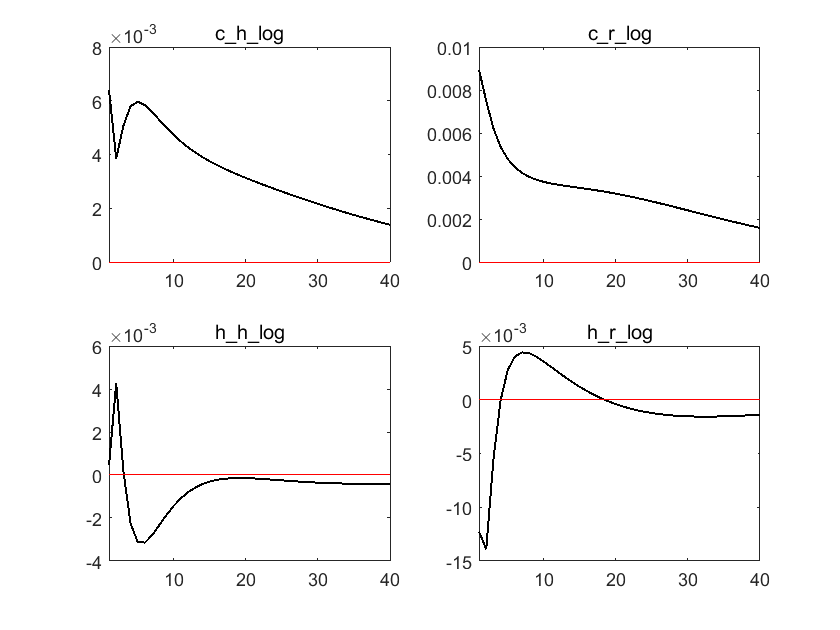
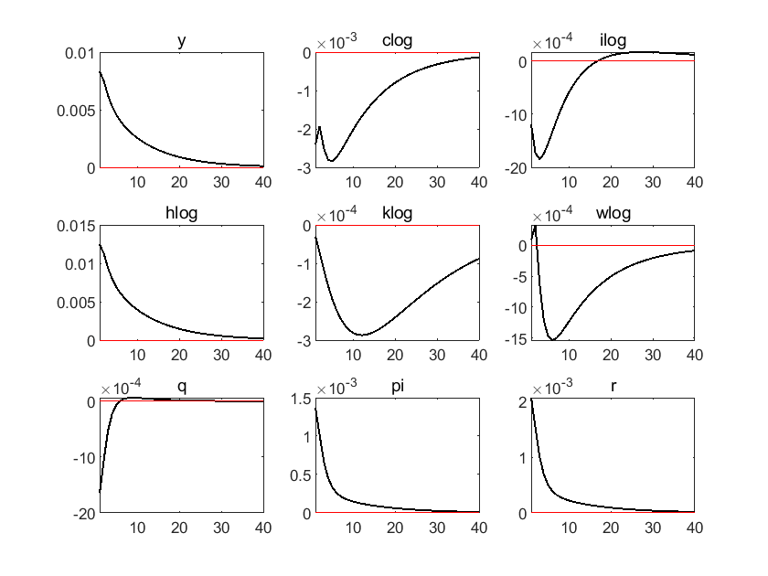
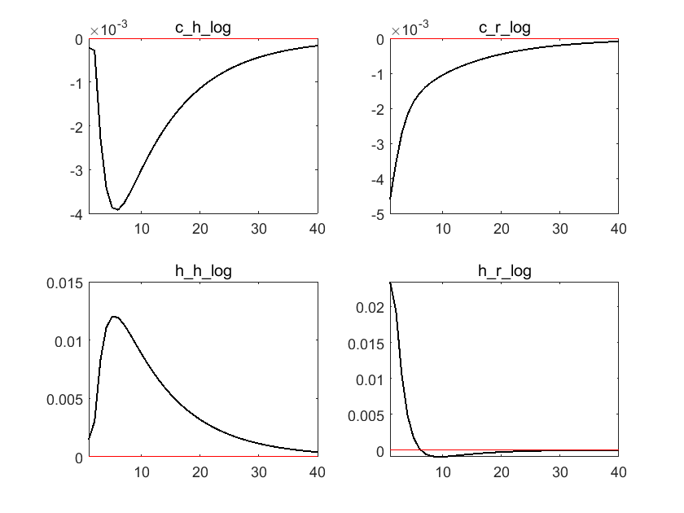
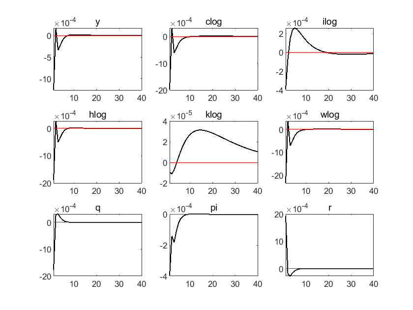
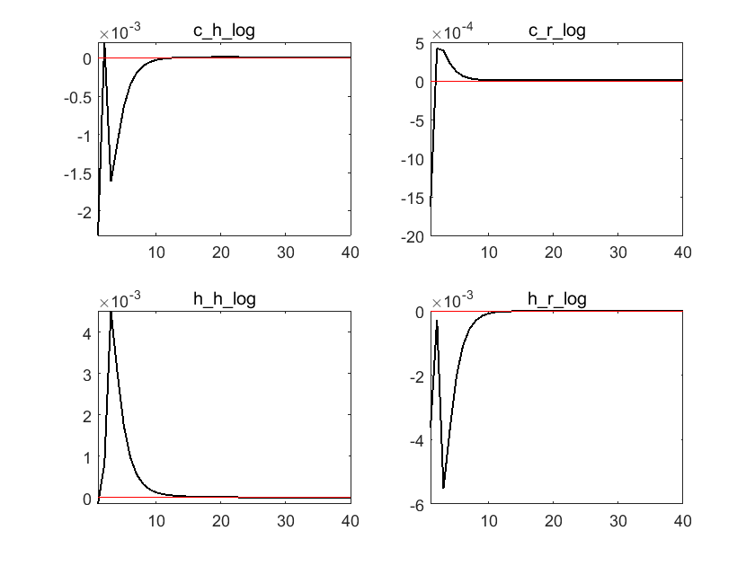

ECON 5360 Tutorial 2#
New Keynesian Model and its Extension#
DING Minjie, Spring 2025#
In this tutorial, we will talk about model setting and dynare coding of New Keynesian model, then extend it to two-agent model.
Household
Final goods firms
Intermediate goods firms
Policy and market clearing
Equilibrium and steady state
Dynare code for NK model
Two-agent New Keynesian model
In classical models, money is neutral both in the short term and long term, and monetary policy cannot affect the real economy.
Howeverempiricalnd evidencshows e that monetary policdoes y has impact on the real economy.
The idea of New Keynesian Model is to introduce some short-run frictions to induce short-run non-neutrality of money.
There are two key elements of New Keynesian models:
Monopolistic competition. Instead of perfect competition, we assume there is imperfect competition, firms are not price taker any more. Prices are set by firms to maximize their profit.
Nominal rigidities. Firms cannot freely adjust prices. They are subject to some constraints on the frequency with which they can adjust the prices (Calvo-type sticky price), or they may face some costs of adjusting prices (Rotemberg sticky price).
In other words, we can say that:
1. Household#
The representative household solves the following optimization problem:
where:
\(c_t\) is consumption
\(h_t\) is labor, or you can take it as hours for working
\(i_t\) is investment in new capital, which produce rental rate of \(r_t^k\)
\(b_{t}\) is the amount of a one-period nominal risk-free bond paying a nominal gross interest rate \(r_{t}\)
\(\Gamma_t\) is profit
\(t_t\) is tax
\(p_{t}\) is the price level
\(\sigma\) is coefficient of relative risk aversion or intertemporal elasticity of substitution (IES)
\(\phi\) is labor supply elasticity or disutility parameter, or the reciprocal of Frisch elasticity of labor supply
\(\kappa_L\) is disutility of labor
\(\kappa_I\) is adjustment cost of investment
Compared with RBC model, we introduce \(p_t\) here, now the budget constraint is expressed in nominal terms
The Lagrangian function as follows:
First order conditions (foc) with respect to (wrt) consumption:
Foc wrt labor:
Foc wrt bonds:
Foc wrt capital:
Foc wrt investment:
The real interest rate \(r_{t}^{r}\) is defined as follows:
And remember law of motion of capital is: $\( k_{t}=(1-\delta) k_{t-1}+\left[1-\frac{\kappa_{I}}{2}\left(\frac{i_{t}}{i_{t-1}}-1\right)^{2}\right] i_{t} \tag{7} \)$
The 7 equations above is equilibrium conditions from households side.
You may wonder why we neglect budget constraint condition, the reason is that it is essentially same with market clearing condition. We only need one of them.
The Dynare code of this 7 equations is:
lambda=c^-sigma;
kappaLh^(phi)=wlambda;
1=betalambda(1)/lambdar/pi(1);
1=betalambda(1)/lambda(rk(1)+(1-delta)*q(1))/q;
1=q*(1-kappaI/2*(i/i(-1)-1)^2-kappaI*(i/i(-1)-1)i/i(-1))+kappaIbetalambda(1)/lambdaq(1)(i(1)/i-1)(i(1)/i)^2;
rr=r/pi(1);
k=(1-delta)k(-1)+(1-kappaI/2(i/i(-1)-1)^2)*i;
2. Final Goods Firms#
The representative final-good firm produce goods following CES aggregator: $\( y_{t}=\left[\int_{0}^{1} y_{t}(i)^{\frac{\varepsilon-1}{\varepsilon}} d i\right]^{\frac{\varepsilon}{\varepsilon-1}} \)\( where \)y_{t}(i)\( is an intermediate input produced by the intermediate firm \)i\(, whose price is \)p_{t}(i)$.
The problem of the final-good firm is the following:
\begin{equation*} \max {y{t},\left{y_{t}(i)\right}{i \in[0,1]}} p{t} y_{t}-\int_{0}^{1} p_{t}(i) y_{t}(i) d i \end{equation*}
\begin{equation*} \text { s.t } y_{t}=\left[\int_{0}^{1} y_{t}(i)^{\frac{\varepsilon-1}{\varepsilon}} d i\right]^{\frac{\varepsilon}{\varepsilon-1}} \end{equation*}
Plug the constraint in the objective function: $\( \max _{\left\{y_{t}(i)\right\}_{i \in[0,1]}} p_{t}\left[\int_{0}^{1} y_{t}(i)^{\frac{\varepsilon-1}{\varepsilon}} d i\right]^{\frac{\varepsilon}{\varepsilon-1}}-\int_{0}^{1} p_{t}(i) y_{t}(i) d i \)$
Foc wrt the generic input \(i\):
\begin{align*} p_{t}\left[\int_{0}^{1} y_{t}(i)^{\frac{\varepsilon-1}{\varepsilon}} d i\right]^{\frac{1}{\varepsilon-1}} y_{t}(i)^{-\frac{1}{\varepsilon}} & =p_{t}(i) \ p_{t} y_{t}^{\frac{1}{\varepsilon}} y_{t}(i)^{-\frac{1}{\varepsilon}} & =p_{t}(i) \ y_{t}(i) & =y_{t}\left(\frac{p_{t}(i)}{p_{t}}\right)^{-\varepsilon} \tag{} \end{align*}
Since final goods firms produce identical goods, and they are in perfectly competitive market, then their profit is zero. So, we have:
Rearrange and we get:
There is no direct equilibiurm condition from final goods firms, so we will not give Dynare code in this section.
NK model introduces final goods firms, mainly to get these two equations:
With these two equations, we can solve optimal equations for intermediate goods firms.
Personally, I think this is the most counter-intuitive part of New Keynesian Model. How could it be that all final goods firms are perfectly competitive, and all intermediate goods firms are monopoly firms?
Even in final goods industry like retail industry, there are monopoly firms such as Walmart. And for intermediate goods industry like plastic industry, it’s a perfectly competitive market in China. So, NK model seems to be an unplausible and factitious model, from this perspective.
Let’s think the other way. There are always fully competitive firms and monopoly firms. Then we name monopoly firms as intermediate goods firms, even though they are not in intermediate goods industry. We name price takers as final goods firms, even though they are not in final goods industries. Under this definition, monopoly firms have power to export price change to fully competitive firms, even though monopoly firms are final goods firms.
For example, Walmart is in final goods industry, but also monopoly firm. Under setting of NK model, we should name it as intermediate goods firms. And with its market power, Walmart can export price change to its suppliers.
In this way, I convince myself that the fundamental model of monetary economics is plausible.
3. Intermediate Goods Firms#
There is a continuum of firms of measure unity, indexed by \(i\), producing a differentiated input through the following Cobb-Douglas function:
where \(a_{t}\) is the total factor productivity, which follows an autoregressive process:
and \(v_{t}^{a} \sim N\left(0, \sigma_{a}^{2}\right)\) is a technology shock.
Firms set the price of their own good subject to the demand of the final good firm. In addition, firms pay quadratic adjustment costs \(A C_{t}(i)\) in nominal terms according to Rotemberg (1982), whenever they adjust prices with respect to the inflation target \(\bar{\pi}\).
\begin{equation*} A C_{t}(i)=\frac{\kappa_{P}}{2}\left(\frac{p_{t}(i)}{p_{t-1}(i)}-\bar{\pi}\right)^{2} p_{t} y_{t} \end{equation*}
The profit maximization problem of the generic firm \(i\), expressed in terms of the domestic price index, is the following:
Eliminate one constraint and write the lagrangian as follows: $\( \begin{aligned} \mathcal{L}^{I}= & \mathbb{E}_{0}\left\{\sum _ { t = 0 } ^ { \infty } \beta ^ { t } \frac { \lambda _ { t } } { \lambda _ { 0 } } \left[\left(\frac{p_{t}(i)}{p_{t}}\right)^{1-\varepsilon} y_{t}-w_{t} h_{t}(i)-r_{t}^{k} k_{t-1}(i)-\frac{\kappa_{P}}{2}\left(\frac{p_{t}(i)}{p_{t-1}(i)}-\bar{\pi}\right)^{2} y_{t}+\right.\right. \\ & \left.\left.+m c_{t}(i)\left[a_{t}\left(k_{t-1}(i)\right)^{\alpha}\left(h_{t}(i)\right)^{1-\alpha}-y_{t}\left(\frac{p_{t}(i)}{p_{t}}\right)^{-\varepsilon}\right]\right]\right\} \end{aligned} \)$
where \(m c_{t}(i)\) is the lagrangian multiplier, which can be interpreted as the real marginal cost of producing an additional unit of output.
Foc wrt capital:
Foc wrt to labor: $\( w_{t} * h_t(i) =m c_{t}(i)(1-\alpha) a_{t}\left(k_{t-1}(i)\right)^{\alpha}\left(h_{t}(i)\right)^{1-\alpha} \)$
Foc wrt to \(p_{t}(i)\) : $\( \begin{aligned} (1-\varepsilon)\left(\frac{p_{t}(i)}{p_{t}}\right)^{-\varepsilon} \frac{y_{t}}{p_{t}}-\frac{\kappa_{P}}{p_{t-1}(i)} \left(\frac{p_{t}(i)}{p_{t-1}(i)}-\bar{\pi}\right) y_{t}+\varepsilon m c_{t}(i) \frac{y_{t}}{p_{t}}\left(\frac{p_{t}(i)}{p_{t}}\right)^{-\varepsilon-1}+ \beta \mathbb{E}_{t}\left[\frac{\lambda_{t+1}}{\lambda_{t}} \kappa_{P} \frac{p_{t+1}(i)}{p_{t}(i)^{2}}\left(\frac{p_{t+1}(i)}{p_{t}(i)}-\bar{\pi}\right)^{} y_{t+1}\right]=0 \end{aligned} \)$
In a symmetric equilibrium, firms choose the same price, same inputs and same output. Using the production function it turns out:
\begin{align*} r_{t}^{k} & =m c_{t} \alpha \frac{y_{t}}{k_{t-1}} \tag{9}\ w_{t} & =m c_{t}(1-\alpha) \frac{y_{t}}{h_{t}} \tag{10} \end{align*}
Rearrange the pricing condition:
\begin{align*} & (1-\varepsilon) \frac{y_{t}}{p_{t}}-\frac{\kappa_{P}}{p_{t-1}}\left(\frac{p_{t}}{p_{t-1}}-\bar{\pi}\right) y_{t}+\varepsilon m c_{t} \frac{y_{t}}{p_{t}}+\beta \mathbb{E}{t}\left[\frac{\lambda{t+1}}{\lambda_{t}} \kappa_{P} \frac{p_{t+1}}{p_{t}^{2}}\left(\frac{p_{t+1}}{p_{t}}-\bar{\pi}\right) y_{t+1}\right]=0 \ & (\varepsilon-1)+\kappa_{P} \frac{p_{t}}{p_{t-1}}\left(\frac{p_{t}}{p_{t-1}}-\bar{\pi}\right)-\varepsilon m c_{t}-\beta \mathbb{E}{t}\left[\frac{\lambda{t+1}}{\lambda_{t}} \kappa_{P} \frac{p_{t+1}}{p_{t}}\left(\frac{p_{t+1}}{p_{t}}-\bar{\pi}\right) \frac{y_{t+1}}{y_{t}}\right]=0 \ & \frac{p_{t}}{p_{t-1}}\left(\frac{p_{t}}{p_{t-1}}-\bar{\pi}\right)=\beta \mathbb{E}{t}\left[\frac{\lambda{t+1}}{\lambda_{t}} \frac{p_{t+1}}{p_{t}}\left(\frac{p_{t+1}}{p_{t}}-\bar{\pi}\right) \frac{y_{t+1}}{y_{t}}\right]+\frac{1}{\kappa_{P}}\left(1-\varepsilon+\varepsilon m c_{t}\right) \ & \pi_{t}\left(\pi_{t}-\bar{\pi}\right)=\beta \mathbb{E}{t}\left[\frac{\lambda{t+1}}{\lambda_{t}} \pi_{t+1}\left(\pi_{t+1}-\bar{\pi}\right) \frac{y_{t+1}}{y_{t}}\right]+\frac{\varepsilon}{\kappa_{P}}\left(m c_{t}-\frac{\varepsilon-1}{\varepsilon}\right), \tag{11} \end{align*}
And profit from monopoly firms are:
\begin{align*} \Gamma_{t}^{I}=y_{t}\left[1-m c_{t}-\frac{\kappa_{P}}{2}\left(\pi_{t}-\bar{\pi}\right)^{2}\right] \tag{} \end{align*}
As compared to profit from fully competitive firms are zero: \begin{align*} \Gamma_{t}^{C}=0 \tag{} \end{align*}
Now we have 4 more equilibrium conditions from firms side. And write them in Dynare code.
y=ak(-1)^alphah^(1-alpha);
alphamcy=rk*k(-1);
(1-alpha)mcy=w*h;
(pi-steady_state(pi))pi=beta(lambda(1)/lambday(1)/ypi(1)(pi(1)-steady_state(pi)))+epsilon/kappaP(mc-(epsilon-1)/epsilon);
4. Policy and Market Clearing#
Clearing in the good market implies:
\begin{equation*} y_{t}=c_{t}+i_{t}+g_{t}+\frac{\kappa_{P}}{2}\left(\pi_{t}-\bar{\pi}\right)^{2} y_{t} \tag{12} \end{equation*}
Clearing in the bond market implies:
\begin{equation*} b_{t}=0 \end{equation*}
The monetary authority sets the nominal interest rate according to the following Taylor rule:
\begin{equation*} \frac{r_{t}}{r}=\left(\frac{r_{t-1}}{r}\right)^{\rho_{r}}\left[\left(\frac{\pi_{t}}{\bar{\pi}}\right)^{\phi_{\pi}}\left(\frac{y_{t}}{y}\right)^{\phi_{y}}\right]^{1-\rho_{r}} \exp \left(v_{t}^{m}\right) \tag{13} \end{equation*}
where \(v_{t}^{m} \sim N\left(0, \sigma_{m}^{2}\right)\) is a monetary policy shock.
Remember that, the total factor productivity \(a_{t}\) follows an autoregressive process:
and \(v_{t}^{a} \sim N\left(0, \sigma_{a}^{2}\right)\) is a technology shock.
Moreover, the government finances public expenditure \(g_{t}\) by raising lump-sum taxes:
\begin{equation*} g_{t}=t_{t} \end{equation*}
where \(g_{t}\) follows an autoregressive process:
\begin{equation*} \log \left(g_{t}\right)=\left(1-\rho_{g}\right) \log (\bar{g})+\rho_{g} \log \left(g_{t-1}\right)+v_{t}^{g} \tag{15} \end{equation*}
and \(v_{t}^{g} \sim N\left(0, \sigma_{g}^{2}\right)\) is a public spending shock.
We have the last 4 equiblirium conditions and write them down in Dynare.
y=c+i+g+(kappaP/2*(pi-piss)^2)*y;
r/(rss)=((pi/steady_state(pi))^(phipi)(y)^(phiy))^(1-rhom)(r(-1)/rss)^(rhom)*exp(vm);
log(a)=(1-rhoa)log(ass)+rhoalog(a(-1))+va;
log(g)=(1-rhog)log(gss)+rhoglog(g(-1))+vg;
5. Equilibrium and Steady State Solution#
The equilibrium conditions of the model are the following:
Compared to traditional RBC model, there are 3 additional equations: the definition of the real interest rate (7), the Phillips curve (11), and the Taylor rule (13). The 3 additional variables are \(r_{t}\), \(m c_{t}\), and \(\pi_{t}\). Notice that the price level \(p_{t}\), together with inflation \(\pi_{t} \equiv \frac{p_{t}}{p_{t}-1}\) are not included in the set of equilibrium conditions because it would introduce a unit root in the model.
In steady state, we can easily get:
\begin{align*} a & = \bar{a} \ g & = \bar{g} \ \pi & = \bar{\pi} \ r & = \frac{\bar{\pi}}{\beta} \ r^r & = \frac{1}{\beta} \ q & = 1\ r^k & = \frac{1}{\beta} - (1-\delta)\ mc & = \frac{\epsilon - 1}{\epsilon} \ \end{align*}
Assume we know \(y\), then from equation (9) and (10), we can get:
Then from equation (6), we have: $\( i = \delta k \)$
From equation (12), we have: $\( c = y - i - \bar{g} \)$
Based on equation (1) and (2), we choose a \(\kappa_L\) so that \(h=\frac{1}{3}\)
And we choose a \(\bar{a}\) so that \(y = 1\)
6. Dynare code for NK model#
Let’s see all Dynare code.
Firstly, the variable part.
var c, rk, rr, w, h, y, k, q, i, lambda, r, pi, mc, g, a, clog, wlog, hlog, klog, ilog;
varexo va, vg, vm;
Then, parameters part.
parameters beta, alpha, delta, sigma, phi, kappaL, epsilon, gss,
ass, piss, rss, kappaI, kappaP, phipi, phiy, rhoa, rhog, rhom;
beta = 0.99; % discount factor
alpha = 0.33; % capital share
delta = 0.025; % depreciation rate
sigma = 2; % relative risk aversion
phi = 1; % labor elasticity
kappaL = 13.7; % disutility of labor
epsilon = 6; % product elasticity
gss = 0.2; % steady state public spending
ass = 1.06; % steady state TFP
piss = 1; % steady state inflation
rss = 1.01; % steady state interest rate
kappaI = 2.48; % adjustment cost
kappaP = 28; % inflation cost
phipi = 1.5; % Tylor rule coefficient of inflaton
phiy = 0.125; % Tylor rule coefficient of output
rhoa = 0.9; % persistence of TFP
rhog = 0.9; % persistence of public spending
rhom = 0.8; % persistence of monetary policy shock
And model part:
model;
lambda=c^-sigma; % equation 1
kappaLh^(phi)=wlambda; % equation 2
1=betalambda(1)/lambdar/pi(1); % equation 3
1=betalambda(1)/lambda(rk(1)+(1-delta)q(1))/q; % equation 4
1=q(1-kappaI/2*(i/i(-1)-1)^2-kappaI*(i/i(-1)-1)i/i(-1))+kappaIbetalambda(1)/lambdaq(1)(i(1)/i-1)(i(1)/i)^2; %equation 5
k=(1-delta)k(-1)+(1-kappaI/2(i/i(-1)-1)^2)*i; % equation 6
y=ak(-1)^alphah^(1-alpha); % equation 8
(1-alpha)mcy=wh; % equation 9
alphamcy=rkk(-1); % equation 10
(pi-steady_state(pi))pi=beta(lambda(1)/lambday(1)/ypi(1)(pi(1)-steady_state(pi)))+epsilon/kappaP(mc-(epsilon-1)/epsilon); % equation 11
y=c+i+g+(kappaP/2*(pi-piss)^2)*y; % equation 12
r/(rss)=((pi/steady_state(pi))^(phipi)(y)^(phiy))^(1-rhom)
(r(-1)/rss)^(rhom)*exp(vm); % equation 13
log(a)=(1-rhoa)log(ass)+rhoalog(a(-1))+va; % equation 14
log(g)=(1-rhog)log(gss)+rhoglog(g(-1))+vg; % equation 15
rr=r/pi(1); % equation 7
clog=log(c);
wlog=log(w);
hlog=log(h);
klog=log(k);
ilog=log(i);
end;
Set the initial value, which is usually the steady state value.
initval;
pi=1;
y=1;
h=1/3;
rr=1/beta;
r=pi/beta;
q=1;
rk=1/beta-(1-delta);
mc=(epsilon-1)/epsilon;
k=alphamcy/rk;
w=(1-alpha)mcy/h;
i=delta*k;
g=gss;
a=ass;
c=y-i-g;
lambda=c^(-sigma);
clog=log(c);
wlog=log(w);
hlog=log(h);
klog=log(k);
ilog=log(i);
end;
The remaining part.
steady;
shocks;
var va; stderr 0.01;
var vg; stderr 0.01;
var vm; stderr 0.0025;
end;
stoch_simul(irf=40,order=1, hp_filter=1600,pruning,noprint)
y
clog
ilog
hlog
klog
wlog
q
pi
r;
cd"C:\Users\ading\A_TA_Notes"
pwd
ans = 'C:\Users\ading\A_TA_Notes'
dynare newkeynesian.mod
Starting Dynare (version 6.2).
Calling Dynare with arguments: none
Starting preprocessing of the model file ...
Found 20 equation(s).
Evaluating expressions...
Computing static model derivatives (order 1).
Normalizing the static model...
Finding the optimal block decomposition of the static model...
6 block(s) found:
5 recursive block(s) and 1 simultaneous block(s).
the largest simultaneous block has 10 equation(s)
and 10 feedback variable(s).
Computing dynamic model derivatives (order 1).
Normalizing the dynamic model...
Finding the optimal block decomposition of the dynamic model...
4 block(s) found:
3 recursive block(s) and 1 simultaneous block(s).
the largest simultaneous block has 12 equation(s)
and 12 feedback variable(s).
Preprocessing completed.
Preprocessing time: 0h00m00s.
STEADY-STATE RESULTS:
c 0.606219
rk 0.035101
rr 1.0101
w 1.6788
h 0.333441
y 1.00259
k 7.85482
q 1
i 0.196371
lambda 2.72108
r 1.01033
pi 1.00022
mc 0.833333
g 0.2
a 1.06
clog -0.500514
wlog 0.518078
hlog -1.09829
klog 2.06113
ilog -1.62775



Total computing time : 0h00m09s
6. Two Agent New Keynesian Model#
Now we introduce two types of households, which differ in the access to financial markets.
household who can invest in bonds, this household is labeled as “Ricardian” or “Non hand to mouth”.
household who does not have access to financial markets and just consumes disposable income, this household is typically labeled as “hand to mouth” or “rule-of-thumb”, or “non-ricardian”.
Suppose percentage of hand-to-mouth household (HtM household) is \(\eta\), percentage of ricardian household is \(1-\eta\).
changes 1: HtM household
Since HtM household does not have access to financial market, their behavior has nothing to do with social investment \(i_t\), bonds \(b_t\) and monopoly profit \(\Gamma_t\). So, the behavior of ricardian households is the same as that in traditional New Keynesian model above. And for HtM households, they solve the following problem.
Foc with respect to labor:
Also, from budget constraint: $\( \begin{align*} c_{t}^{r}=w_{t} h_{t}^{r}-t_{t}^{r} \tag{17} \end{align*} \)$
change 2: market clear condition
Now we have two types of household, use superfix “r” for ricardian households, use superfix “h” for HtM households.
Aggregate Consumption: $\( \begin{align*} c_{t}=(1-\eta) c_{t}^{r}+\eta c_{t}^{h} \tag{18} \end{align*} \)$
Aggregate Labor: $\( \begin{align*} h_{t}=(1-\eta) h_{t}^{r}+\eta h_{t}^{h} . \tag{19} \end{align*} \)$
Aggregate Capital and Investment: $\( \begin{align*} k_{t} & =(1-\eta) k_{t}^{o} \tag{}\\ i_{t} & =(1-\eta) i_{t}^{o} \tag{} \end{align*} \)$
Aggregate Public Bonds (in Real Terms): $\( \begin{equation*} d_{t}=(1-\eta) \frac{b_{t}}{p_{t}} \tag{} \end{equation*} \)$
Aggregate capital and investment and aggregate public bonds can introduced into equilibrium condition system.
When introduced, we add one variable and one equation, since aggregate capital, investment and bonds only cover ricardian households.
We can also ignore these variables, and delete them from equilibrium system. There is no difference essentially.
Finally, the clearing in the good market implies:
\begin{align*} y_{t}=c_{t}+i_{t}+g_{t}+\frac{\kappa_{P}}{2}\left(\pi_{t}-\bar{\pi}\right)^{2} y_{t} \tag{12} \end{align*}
Again, this equation is essentially same as budget constraint for ricardian households, so we delete one of them. Here budget constraint is deleted.
change 3: tax policy
The government finances public expenditure \( g_{t} \) by raising lump-sum taxes and public debt \( d_{t} \):
where \( g_{t} \) follows an autoregressive process:
and \( v_{t}^{g} \sim N\left(0, \sigma_{g}^{2}\right) \) is a public spending shock.
Lump-sum taxes are set according to the following rules:
Finally, we get an equilibrium system of 22 equations. The first 15 equations are almost the same as those in traditional New Keynesian model, except that superfix should be added for ricardian households only when talking about consumption and labor.
The newly added 7 equations are:
dynare twoagent.mod
Starting Dynare (version 6.2).
Calling Dynare with arguments: none
Starting preprocessing of the model file ...
WARNING: twoagent.mod:13.1-48.1: Symbol c_r declared twice.
Found 31 equation(s).
Evaluating expressions...
Computing static model derivatives (order 1).
Normalizing the static model...
Normalization failed with cutoff, trying symbolic normalization...
Finding the optimal block decomposition of the static model...
6 block(s) found:
5 recursive block(s) and 1 simultaneous block(s).
the largest simultaneous block has 17 equation(s)
and 17 feedback variable(s).
Computing dynamic model derivatives (order 1).
Normalizing the dynamic model...
Finding the optimal block decomposition of the dynamic model...
4 block(s) found:
3 recursive block(s) and 1 simultaneous block(s).
the largest simultaneous block has 19 equation(s)
and 18 feedback variable(s).
Preprocessing completed.
Preprocessing time: 0h00m00s.
STEADY-STATE RESULTS:
c 0.602158
rk 0.035101
rr 1.0101
w 1.66667
h 0.333333
y 1
k 7.91367
q 1
i 0.197842
lambda 1.66069
r 1.0101
pi 1
mc 0.833333
g 0.2
a 1.04381
c_h 0.602158
c_r 0.602158
h_h 0.333333
h_r 0.333333
t_r -0.0466027
t_o 0.527411
d 4
clog -0.507235
wlog 0.510826
hlog -1.09861
klog 2.06859
ilog -1.62029
c_h_log -0.507235
c_r_log -0.507235
h_h_log -1.09861
h_r_log -1.09861
EIGENVALUES:
Modulus Real Imaginary
0.1366 0.1366 0
0.534 0.534 0
0.8595 0.8595 0
0.9 0.9 0
0.9 0.9 0
0.9383 0.9383 0
1.071 1.071 0
1.09 1.047 0.3041
1.09 1.047 -0.3041
1.238 1.238 0
2.536e+16 2.536e+16 0
8.51e+18 8.51e+18 0
There are 6 eigenvalue(s) larger than 1 in modulus for 6 forward-looking variable(s)
The rank condition is verified.






Total computing time : 0h00m08s
Note: 1 warning(s) encountered in the preprocessor
With two agent New Keynesian model, we can check policy effect on different types of households.
For example, when there is positive monetary policy shock, or an increase in interest rate, consumption of HtM households decreases more than that of ricardian households, due to no access to financial market. And HtM households have to work for more hours to compensate for this shock.
Some literature explores three-agent New Keynesian model, which is similar to two-agent model.
Reference#
Valerio Nispi Landi, Note on NK Model and TANK Model, 2021
Gali, Monetary Policy, Inflation, and the Business Cycle, 2015
Gali, Lopez, Valles, Understanding the Effects of Government Spending on Consumption, Journal of the European Economic Association, 2007
李向阳,《动态随机一般均衡(DSGE)模型》,2018